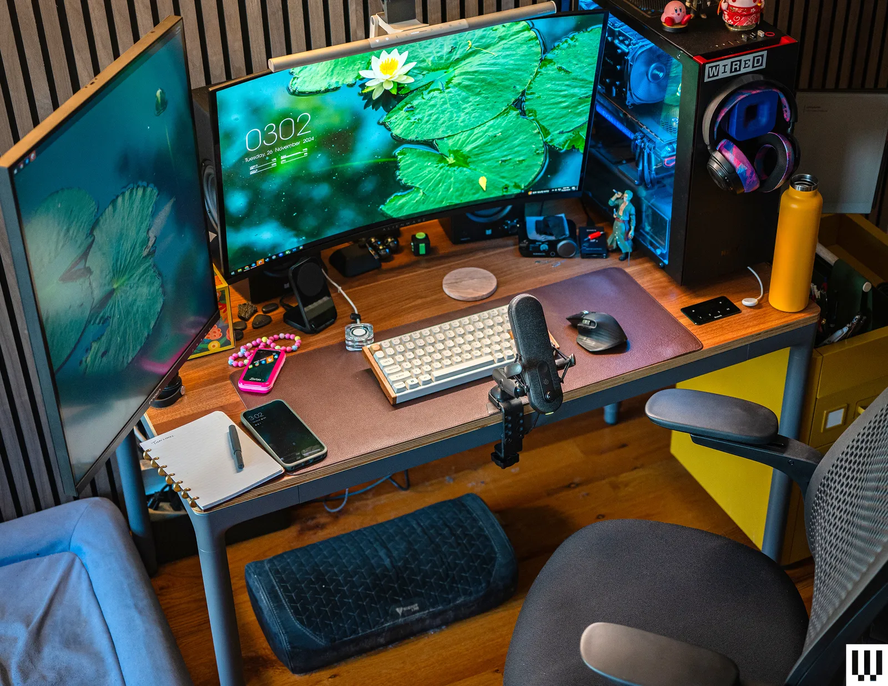
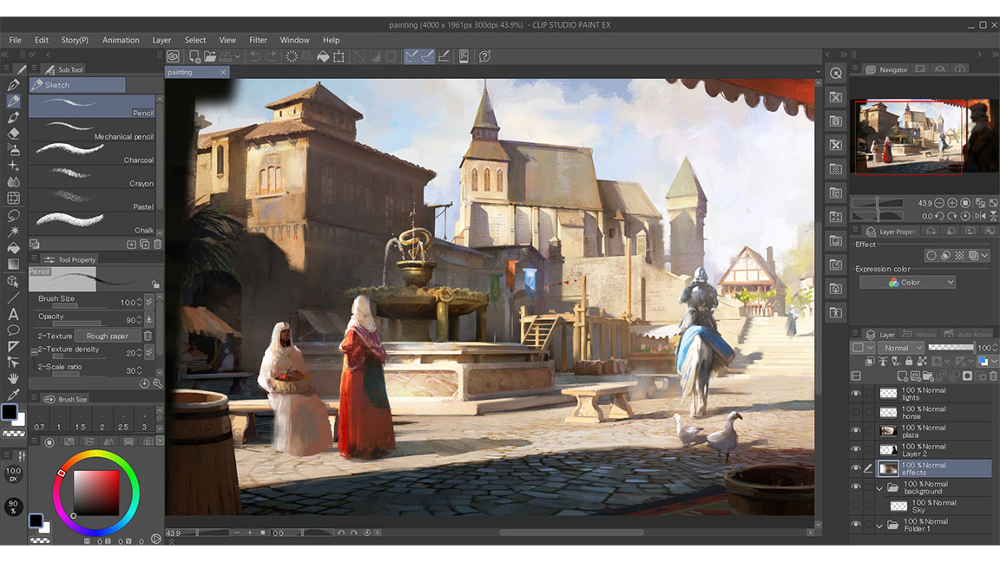
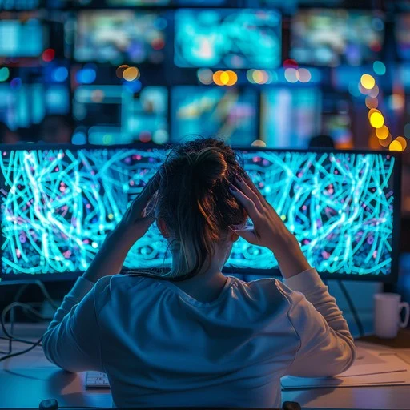

Table of Contents
Digital Burnout in Creative Fields
Understanding how technology can both inspire and exhaust digital creators—and how to find balance.
Introduction
As a Digital Media major, I’ve noticed how creative software and technology can both inspire and exhaust creators. With technology driving every stage of the creative process—from editing to promotion—many experience stress, fatigue, and mental exhaustion from constant digital demands.
This web guide explores what digital burnout is, its causes, and how to prevent it through better balance and wellness strategies. It aims to help creators recognize the signs of burnout and maintain their creativity and mental health while navigating a tech-centered world.
How Technology Fuels Creativity
Technology gives creators access to tools that make ideas feel possible. Editing apps, design platforms, online tutorials, and even social media can help spark inspiration when we hit a wall. Many creators say that when technology is working well, it feels like having a whole studio in your pocket—something that invites experimentation instead of limiting it.
Several sources in my Zotero library describe how digital tools make it easier to try new styles without the fear of “wasting” materials. One artist talked about how digital platforms let them make quick drafts that would take hours by hand. Another mentioned that seeing other people’s creative processes online helped them feel less alone. Technology, in these moments, becomes a support system rather than a distraction.
I’ve experienced this too. Sometimes just opening Lightroom or Canva makes me want to start experimenting with colors, shapes, or layout. Other times I’ll see something online that gives me an idea I never would’ve had on my own. When that happens, tech feels more like a doorway into creativity than a barrier.

Image source
Reflection
Looking at these studies helped me realize that tech isn't just a distraction—it can be a spark. When we use it intentionally, it creates space to explore, revise, and take risks without pressure. I noticed that my most creative moments come when I'm experimenting, not when I’m trying to “get it right.”
Pause & Think
When does technology help you feel more creative? What tools make you feel excited to try something new?
When Tech Becomes Too Much
Even though technology helps us create, it can also wear us down when we feel like we have to stay active, visible, or productive all the time. Many creators talk about feeling like they have to keep posting, improving, or being “interesting,” even when they’re tired. The constant scrolling, notifications, and comparison can make creativity feel more like pressure than expression.
In one of the studies from my Zotero collection, creators described this as feeling like they are “always on.” Their work becomes part of their identity, and it becomes hard to separate personal life from creative life. When everything happens online, rest doesn’t always feel like rest — because the same device we relax on is also the device we work on.
I’ve felt this myself. Sometimes I catch myself making something just because I think it will look good online, not because I actually want to create it. And when I scroll through other people’s work, I start comparing instead of being inspired. That’s usually when I can tell that tech is becoming “too much.”

Image source
Reflection
Reading through these made me realize that burnout doesn't always look like “being tired.” Sometimes it looks like not enjoying the thing you love anymore. A lot of creators talk about feeling like they have to be productive every day or they’ll fall behind. I related to that. I noticed I create more freely when I don’t worry about the final product being perfect.
Pause & Think
Think about your own work. When do you feel the most pressure to be perfect? How does that pressure change the way you create?
Common Causes of Burnout in Creative Fields
Burnout for creatives often comes from more than one pressure at a time. Many face what researchers call “technostress” — the stress that arises from constantly using digital tools, juggling multiple platforms, deadlines, and the demand to stay visible online. For creators, that might mean managing content calendars, editing, posting, engaging with audiences, and planning the next idea — all on tight schedules and often without clear boundaries between “work time” and “off time.”
Another big factor is workload and financial instability. For many independent creators, freelancers, or small-team folks, income can be unpredictable, and the pressure to earn can push them to overwork. Recent data from content-creator surveys shows that among creators reporting burnout, the top cited triggers are creative fatigue, demanding workloads, long hours of screen time — and notably, financial strain was often ranked the most severe factor.
Lastly, constant emotional and social pressures — like the need to be “on,” perform for an audience, maintain relevance, and meet external expectations — can weigh heavily over time. Many creators describe pressure to conform to trending styles, to produce what algorithms reward, or to craft public-facing work that feels safe rather than authentic. Over time, that can erode intrinsic motivation, blur identity boundaries (creator vs person), and lead to chronic stress, anxiety, or loss of enjoyment for the creative process.

Image source
Reflection
Thinking about these causes helped me see how burnout doesn’t usually hit with one big blow — it sneaks up gradually, through a mix of pressure, instability, and invisible demands. I realized that there are structural and systemic risks in creative work: the expectation to always produce, the financial uncertainty, the reliance on digital tools, and the emotional labor of sharing yourself publicly. Recognizing that many of these factors are external (not just “my personal failing”) makes it easier to think about prevention and boundaries.
Pause & Think
What pressures — digital tools, unstable income, audience demands — do you feel most often? Which one causes you the most stress? What’s one small change (e.g. fewer posts per week, set work hours, separate personal & creative devices) you could try to reduce that pressure?
Recognizing the Warning Signs
Burnout in creative work doesn’t usually appear all at once — it builds slowly, showing itself in small changes that are easy to ignore at first. One of the first warning signs many creators describe in the research is a shift in how they feel about their work. Tasks that used to feel exciting start to feel heavy or frustrating. Even basic steps like opening a project file, answering a message, or setting up a camera can feel overwhelming. Several authors in my Zotero library talk about this early phase as “emotional dulling,” where the creator isn’t necessarily sad or upset, but creativity starts to feel like another chore on a long list instead of a place for expression. When this feeling becomes consistent — not just an off day — it can be an early sign that burnout is forming beneath the surface.
Another common sign is difficulty disconnecting, even when a creator tries to take a break. Many studies on digital burnout point out that creators often continue thinking about their workload long after they step away from the screen. This can look like checking notifications out of habit, feeling guilty while resting, or constantly planning the next piece of content in their head. Physical symptoms also appear over time: trouble sleeping, headaches, lack of focus, or feeling “foggy.” One piece from my Zotero library described this as “creativity becoming harder to access,” meaning inspiration feels blocked not because a creator has no ideas, but because their mind is too overstimulated and tired to use them. When exhaustion replaces curiosity, or when rest doesn’t feel refreshing anymore, those are strong warning signs that the creative system is overloaded.
Social comparison can also become more intense during early burnout. Creators who once felt motivated by the work of others may suddenly feel discouraged, jealous, or disconnected. In several studies on social media pressure, creators talked about feeling like they were “falling behind” or “not good enough” — even when there was no actual deadline or expectation. This mindset shift can create a cycle where every creative choice starts to feel risky, and perfectionism takes over. When creators begin avoiding work, procrastinating, or feeling anxious about starting something, it’s often a reflection of deeper emotional strain. Recognizing these internal signals early can prevent the spiral from becoming more damaging over time.
Reflection
Reading through these made me notice that burnout rarely looks dramatic at the beginning. It often shows up as small shifts — feeling less excited, avoiding projects, or needing longer breaks to feel normal again. I recognized some of these patterns in my own creative routines, especially the guilt that shows up when I try to rest. Seeing these signs listed in the research made me realize how important it is to pay attention early instead of waiting until things feel unmanageable. It also helped me understand that these symptoms aren’t personal failures — they’re normal responses to being overwhelmed for too long.
Pause & Think
What are the early signs you notice when you’re starting to feel overwhelmed? Do you recognize any of the emotional, physical, or creative symptoms mentioned here? What is one small warning sign you tend to ignore — and how could you respond to it sooner?
Finding Balance and Recovery
Finding balance in creative work doesn’t mean removing technology entirely — it means creating a healthier relationship with the tools we rely on. Several studies in my Zotero library emphasize the importance of intentional boundaries, especially for digital creators who spend most of their time online. One of the most effective strategies mentioned is separating creative time from personal time, even if both happen on the same device. This can look like turning off notifications during work sessions, scheduling screen-free breaks, or setting a “cutoff time” at night where creative tasks stop. When creators consistently build small protective habits, they begin to regain control over their energy instead of letting digital demands guide their pace.
Recovery also requires space for creativity that isn’t tied to productivity. Many articles highlight how important it is for creators to make things without the pressure of posting or performing. Whether it’s sketching, journaling, experimenting with unused tools, or making something that will never leave a private folder, “low-stakes creativity” helps restore enjoyment and reduces burnout. Rest itself is another key part of recovery. Researchers found that creators often underestimate how much real rest they need, especially when they believe taking breaks will slow their growth. But meaningful rest — not scrolling, not multitasking, but actual mental quiet — is what helps the brain reset from overstimulation. When creators view rest as a necessary part of the creative process instead of a disruption, they’re more likely to sustain their work long-term.
Community and communication also play a big role in maintaining balance. Several sources in my collection point out that creative burnout becomes more manageable when creators talk openly about their stress with others who understand the pressure. This can come from classmates, coworkers, online groups, or friends who share similar goals. Support networks remind creators that burnout isn’t a personal flaw — it’s a common experience in digital work. Hearing others talk about their struggles can help reduce comparison, normalize taking breaks, and encourage more realistic expectations. When recovery becomes a shared process rather than something done alone, creators often find it easier to rebuild healthier habits.
Reflection
Writing this section made me realize how much of recovery comes down to giving yourself permission to slow down. A lot of creative stress isn’t caused by the work itself — it comes from feeling like you can’t stop. Seeing how many researchers emphasize rest and low-pressure creativity helped me rethink the way I approach my own projects. Sometimes the most productive thing I can do is step away for a while, breathe, and come back with a clearer mind. Balance isn’t something you “achieve” once — it’s something you continually adjust as your workload and energy change.
Pause & Think
What boundaries could help you protect your creative energy? When was the last time you created something without the intention of posting it? What does real rest look like for you — and how often do you allow yourself to have it?
Building a Sustainable Creative Routine
Building a sustainable creative routine means creating habits that support creativity without draining your mental or emotional energy. Many studies in my Zotero library point out that consistency isn’t about working nonstop — it’s about finding rhythms that match your real life. A sustainable routine usually blends focused creative time with intentional rest, physical movement, and moments of exploration. Instead of forcing yourself to be productive every day, it’s more helpful to design routines that give you space to recharge. When creators build routines around their natural energy levels instead of fighting against them, they produce more meaningful work and feel less overwhelmed.
Another key part of a healthy routine is breaking projects into manageable pieces. Several articles stress the importance of chunking creative tasks so they feel less intimidating. This might mean drafting ideas one day, gathering references the next, and saving editing for a separate session. When each step has its own time and focus, creators experience less pressure and more clarity. Studies in my collection also mention the value of setting realistic goals — not goals based on trends or expectations, but goals that match your capacity. When your routine centers on sustainable effort rather than speed or perfection, you're less likely to burn out and more likely to stay creatively engaged.
Finally, sustainable routines require regular reflection. Many sources describe how creators benefit from checking in with themselves: What habits are helping? What habits are draining? Are you creating from inspiration or obligation? Making space for reflection helps you adjust your workflow before burnout sets in. Some creators even build “creative reset days” into their schedules — time dedicated to experimenting, learning new skills, or stepping away completely. Routines that honor both growth and rest tend to last longer, feel better, and produce more authentic work.
Reflection
Writing this made me think about how often creative routines are shaped by pressure rather than intention. I realized that the habits that help me most aren’t the ones that make me “more productive”—they’re the ones that make creating feel enjoyable again. A sustainable routine isn’t about pushing harder; it’s about creating a rhythm you can actually maintain. When I focus on smaller goals, clearer steps, and regular breaks, I feel more connected to my work and less overwhelmed by it.
Pause & Think
What does a realistic creative routine look like for you? Which habits help you stay inspired—and which ones wear you down? If you could change just one part of your routine to make it healthier, what would it be?
Final Thoughts
After exploring burnout, creativity, and digital habits across all these sections, one thing becomes clear: digital tools aren’t the problem—our relationship with them is. Technology gives creators the ability to tell stories, share work, and connect with communities in ways that weren’t possible before. But the same tools can slowly drain us if we never disconnect or never give ourselves permission to create without pressure. The studies in my Zotero collection all point to the same idea: creativity thrives when we feel grounded, supported, and allowed to be imperfect. Burnout happens when we lose sight of those things and let constant connectivity become the default.
These insights helped me realize that a healthier creative life isn’t about abandoning technology — it’s about redefining how we use it. Whether you're a photographer, designer, writer, influencer, or media student, you deserve a workflow that supports your well-being instead of draining it. Even small changes, like pausing notifications, taking intentional breaks, or creating just for fun, can make a huge difference. The biggest takeaway is that creativity is not a race. It’s a process, and it’s okay for that process to slow down, shift, and evolve over time.
Reflection
Writing this project made me think about how often I tie my value to the things I create. It reminded me that creativity doesn’t have to be constant or perfect — it just has to feel meaningful. I realized that when I slow down and pay attention to my own limits, my work becomes more enjoyable and more authentic. I think anyone working in digital media can relate to the pressure to always do more, but stepping back sometimes leads to better work than pushing harder ever does.
Pause & Think
What part of your creative life needs more balance? What would your work look like if you allowed yourself to rest without guilt? And what might you create if you gave yourself permission to start small again?
Recommended Resources
The following sources provide helpful insight into the ways digital media work impacts emotional well-being. They explore how constant digital engagement, performance pressure, and creative identity influence stress and burnout among creators.
-
Considering Mental Health and
Well-Being in Media Work
This article examines how the fast-paced, unstable, and emotionally invested nature of media work contributes to stress and burnout. It connects personal experiences of exhaustion to larger industry patterns. -
Media Overload and Mental
Health
This resource explains how constant digital engagement affects stress levels, emotional balance, and attention, which is especially relevant for creators who spend long hours working on screens. -
A Netnographic Study of Threats to
Influencer and Creator Mental Health
This study highlights the psychological stressors of maintaining a public creative identity, managing audience expectations, and coping with algorithm-driven visibility pressure.